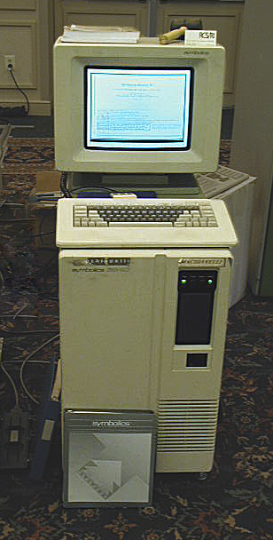
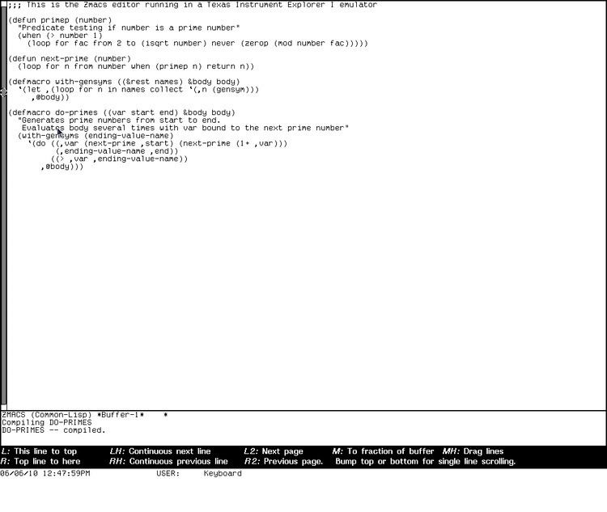
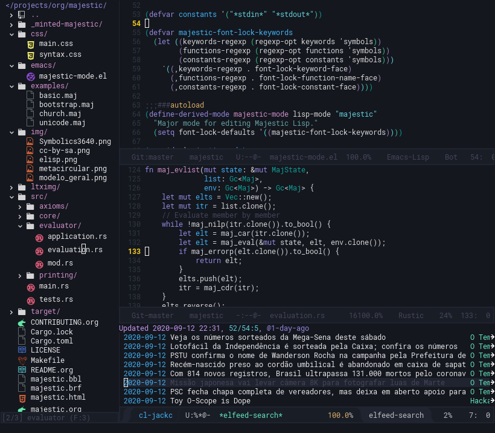

O que é Lisp?
Antes de mais nada, é essencial ressaltar que a linguagem que construiremos ao longo desse texto é um dialeto de Lisp.
LISP, acrônimo para List Processor (processador de listas), é um formalismo inicialmente definido por McCarthy (1960), e então polido até tornar-se uma linguagem de programação propriamente dita. Posteriormente, essa linguagem seria lançada como LISP 1.5.
Sendo LISP um processador de listas, há uma pretensão de que o usuário possa usufruir de uma situação inusitada: tanto código quanto dados poderiam ser expressados sob a mesma estrutura, uma lista simplesmente encadeada (CORMEN et al, 2012).
Desde o lançamento do LISP 1.5 de McCarthy, a linguagem acabou por tornar-se uma família de linguagens, dotada de diversos dialetos, cada qual com suas idiossincrasias. Mas a maioria deles acabou conservando a característica de expressar diretamente as listas em seus códigos, em uma sintaxe que chamamos de s-expressions. Por isso, dialetos de Lisp normalmente possuem a característica de serem dotados de muitos parênteses na escrita.

Figure 1: Symbolics 3640 Lisp Machine. Fonte: https://en.wikipedia.org/wiki/Lisp_machine. Acesso em 12/09/2020.
Muitos dialetos de Lisp tornaram-se populares ao longo da história, inclusive em máquinas comerciais feitas exclusivamente para execução de Lisps, comumente chamadas de Lisp Machines. Nessas máquinas otimizadas para computação simbólica e processamento de listas, todo o sistema operacional era construído usando-se um dialeto de Lisp. Os sistemas incluíam programas extras como um editor de texto vinculado ao sistema, por exemplo. Através do próprio editor de texto, pode-se realizar alterações com impacto em todo o sistema operacional.

Figure 2: Editor de texto Zmacs, editor do TI Explorer. Fonte: https://alchetron.com/Zmacs. Acesso em 18/09/2020.
Apesar dos mais de 50 anos de idade de LISP 1.5, os dialetos de Lisp não deixaram de ter sua popularidade, ainda que modesta. Há muitos dialetos de Lisp modernos, como podemos verificar a seguir.
O dialeto Common Lisp possui implementações com compiladores nativos, tendo sua performance comparável a linguagens como C e C++. As implementações mais maduras vêm também acompanhadas de um sistema de orientação a objetos poderoso, com despacho de métodos baseado em tipos, e também de um sistema maduro de condições que permite recuperar-se de erros imprevistos manualmente, enquanto o programa é executado.
(defun say-hello (name) (format t "Hello, ~a!~%" name)) (say-hello "Fulano")
A linguagem Scheme é uma linguagem simples, com uma especificação sucinta. Sendo o carro-chefe dos exemplos explicados em Abelson, Sussman e Sussman (1996), é uma excelente escolha para iniciantes, sobretudo para aqueles que querem melhor entender o paradigma da programação funcional. Sua contraparte – a linguagem Racket, por vezes figurada como um dialeto de Scheme – é como Scheme com ``pilhas incluídas'', possuindo até mesmo um ambiente integrado de desenvolvimento (IDE) próprio, sendo um ambiente propício até mesmo para iniciantes na programação de computadores.
(define (say-hello name) (display "Hello, ") (display name) (newline)) (say-hello "Fulano")
A linguagem Clojure foi criada por Rich Hickey para ser compatível com a máquina virtual da linguagem Java – a JVM. Atualmente possui grande uso comercial, sendo um dos maiores incentivos para o aprendizado da programação funcional. Sua flexibilidade auxilia inclusive na operabilidade entre programas em Clojure e bibliotecas anteriormente escritas em Java. Possui uma contraparte chamada ClojureScript, que pode ser usada para desenvolvimento web Frontend.
(defn say-hello [name] (format "Hello, %s!\n" name)) (say-hello "Fulano")
O dialeto Emacs Lisp é utilizado como linguagem de script no editor de texto Emacs. Muito similar a Common Lisp, porém com algumas diferenças bem profundas, permite um nível de modificação extremo no editor de texto homônimo. Isso garante ao editor de texto Emacs a flexibilidade de permitir a construção de extensões poderosas, desde ferramentas avançadas para auxílio na codificação de programas, até a utilização do próprio editor de texto como um gerenciador de janelas do sistema operacional.

Figure 3: Editor de texto Emacs, editando código Emacs Lisp e Rust ao mesmo tempo, enquanto também navega por notícias via feed RSS.
A seguir, introduziremos as ideias principais do dialeto com atual maior relevância para você, que lê este texto: Majestic Lisp.
Bibliografia
Harold Abelson and Gerald Jay Sussman and Julie Sussman (1996). Structure and Interpretation of Computer Programs, MIT Press.
John McCarthy (1960). Recursive Functions of Symbolic Expressions and Their Computation by Machine, Part I, Association for Computing Machinery.
Thomas H. Cormen and Charles E. Leiserson and Ronald R. Rivest and Clifford Stein (2012). Algoritmos, Elsevier.